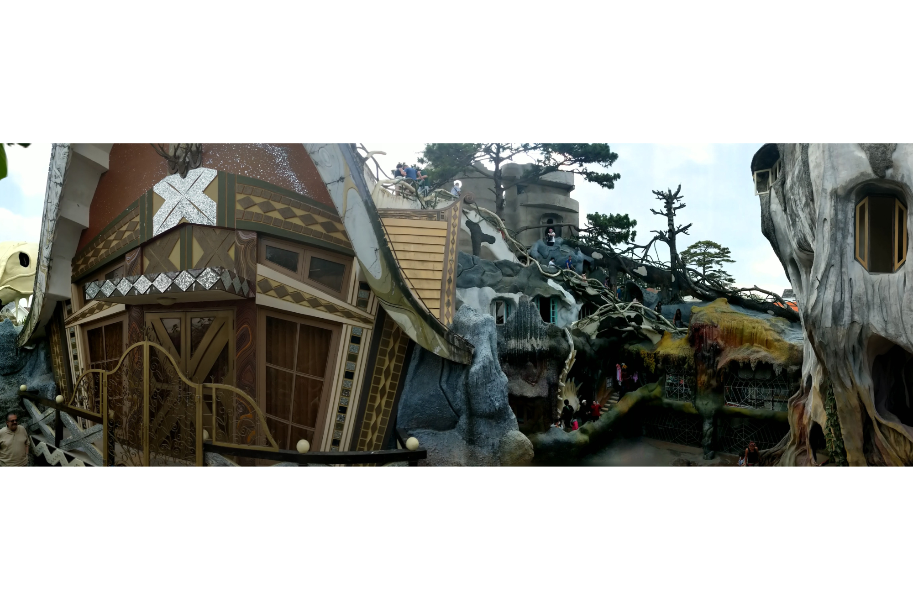
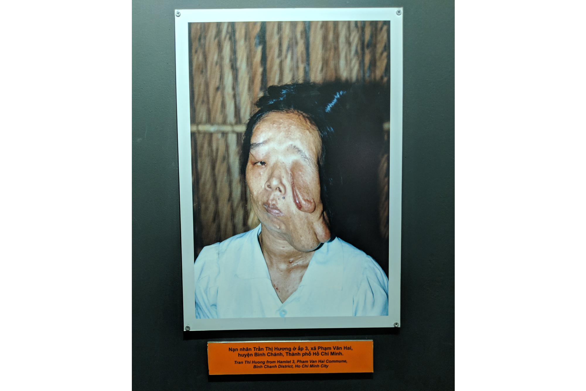

We arrived just before the sun was rising. This was well before what we were told when the bus was going to arrive. We thought we were being smart as there are tons of hotels in Dalat and we guessed it would be easy to find a hotel right when the open when we were supposed to arrive so we didn’t book ahead of time trying to avoid service charges. We were striking out everywhere and either the hotels were booked or 3xs our budget. Once we finally found a place that was just within our budget, we crashed again till around noon before we adventured the city.
Dalat is a cute city known for romance. The flower gardens, old french colonial architecture, and surrounded by wineries, we found the city pleasant and charming. The best parts of the city was the unique art culture mixed with architecture. One of the attractions, appropriately named ‘Crazy House’, looked like a Salvador Dali painting but was a hotel. The hotel is nature themed thus mixed with a Salvador Dali painting, you feel like your walking through Dr. Seuss’ the Lorax. The other attraction is a bar called “Maze Bar”. Imagine walking into a bar and your ticket in is to buy a $2 beer. You then start getting lost with 5 stories and a 3 story garden maze in the back. The passageways, holes you have to climb through, and secret bars are also nature themed with a touch of Salvador Dali. You start in the basement themed with ocean creatures and end at the 3rd floor of the garden maze where you are looking over the city with a giant crescent moon. Pretty wild place.

We also spent a day on another motorbike. Our plan was to hit a nearby waterfall, another weird sculpture cave, and a winery. Our plans did not go accordingly. About 45 minutes, we got a flat tire. It’s common to find a mechanic within a 1km distance from wherever you are stranded however we unfortunately in an area without a mechanic. Luckily we were stranded next to a resort so Rachael got the luxury of laying out by a pool while Dan had to ride the wheel hub searching for a mechanic for about 4km. It wasn’t until he pulled over that another motorbike pulled up next to him with a Buddhist monk on the back and said, “you follow”. The monk bike took Dan directly to a mechanic another 2km away. About 2 hrs later the tire was fixed. Luckily, Dan did not have to pay for it since it was an old tire that cracked and split. Dan came back to find Rach pleasantly drinking wine by an infinity pool overlooking a serene lake. The only attraction available to see due to time constraints was the weird sculpture cave.
Our last stop was Saigon. We heard our friend’s parents were also in Vietnam and were coincidentally both overlapping in Saigon for 4 hours… if the bus was going to arrive on time.
The bus did not arrive on time. In fact, it was 3 hours later than we expected. With the time it took to get off the bus, get our stuff, and hire a tuk tuk, we had a total of 20minutes to meet up with our friends, the Cretchers. Any amount of time is worth it as they are both wonderful people to visit with.
Our time in Saigon was to get ready to head to Cambodia with a little bit of site seeing. The highlight and disgust of our time spent in Saigon was the War Museum. Seeing the devastation the U.S. put on Vietnam in pictures, stories, statistics, and seeing the amount of artillery used on Vietnamese was atrocious. The impact of Agent Orange spanning 3 generations, we met a 2nd generation victim who was disfigured and had a shortened lifespan because of it. The U.S. in the Vietnam/American War were absolute culprits of war crimes.

There’s a reason we ended up spending 2 months in Vietnam. The people, the culture, the diverse tourism attractions, and the outdoors gave us the excitement and satisfaction we were looking for. As we departed Vietnam heading to Cambodia, we realized this is a place we may return… as we did not finish the complete motorbike trip from Hanoi to Saigon.
Thanks for reading,
~Dan and Rachael
Wanna see more? Here are two videos Dan put together of the motorbike trip up north and our trip down south.